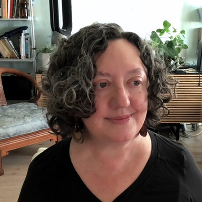
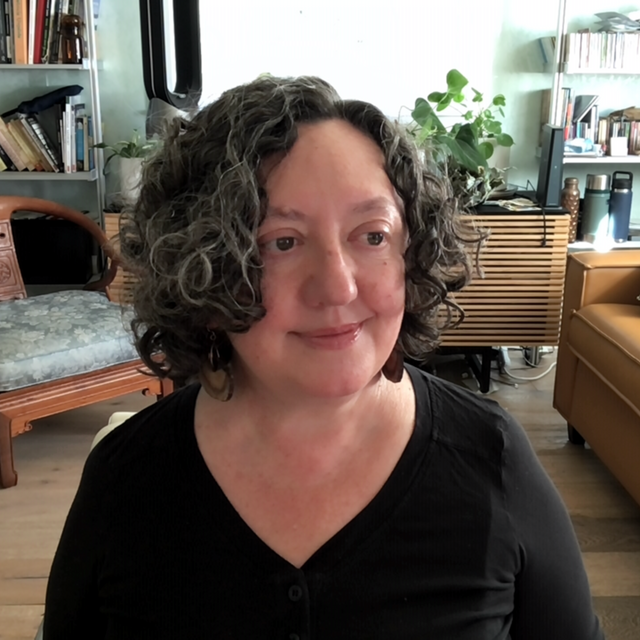
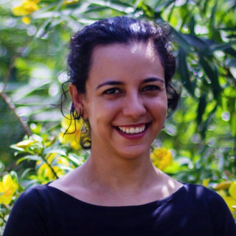

Maru Serrano
Trainer and Educational Director
Compassion is not a commodity we deliver but a commitment to help liberate the intimacy already inherent in any situation.
Joan I. Sutherland Roshi
To preserve the teachings of Ron Kurtz while supporting the Method's evolution, staying loyal to its essence.
We are a Hakomi Method Learning and Practice Center dedicated to preserve the teachings of Ron Kurtz, founder of the Method, while exploring and supporting the Method's evolution staying loyal to its essence. Our Educational Director, Maru Serrano, Trainer and Mentor of the Hakomi Method and direct student of Ron Kurtz for more than a decade, contributes to our Programs providing an extensive understanding of the traditions and methods that are foundation of the Hakomi Method as well as embodying a clear sense of its potential, its somatic background and its transcendent dimension.
Our Trainings and Mentoring Programs are certified and validated by ourselves as well as through the Hakomi Education Network. They do not provide a certification or license to practice themselves but are a recognition of your achievement in your understanding of the Method in all levels and practice so that you can apply it in your life and in whichever profession you are skilled at with confidence.
We know by direct experience that the more you practice the more the initial intentions and passions that once brought you to the path you chose will resurge and give you a deeper sense of purpose and a ground to prevent burnout.
As a community we are committed to creating an open and accessible space that is non-hierarchical and welcomes the full diversity of our human identities. We particularly value the capacity of the methods we practice in expanding our connection with our embodied selves, others and the natural world. We take seriously the implications of this experience of unity for how we distribute dignity and power in our society: it compels us to actively work towards creating communities that can hold each one of us in the wholeness of our humanity, and in sacred relationship with the environment.

Our Trainer and Educational Director
Since 2011 Mentor, Educator, Practitioner and Trainer of the Hakomi Method.
Assistant of Ron Kurtz, founder of the Hakomi Method, in Trainings and Individual sessions until his passing, and group facilitator and mentor for Hakomi Practitioners from 2000 to present. Maru facilitates individual sessions, children and family sessions and Trainings to become Practitioner and Teacher of the Hakomi Method as well as Certification Trainings and Advanced Trainings for Practitioners and Teachers. She also enjoys developing curriculums to bring the Method to diverse institutions and businesses and somatic resources to teachers, psychotherapists and parents.
She brings an inclusive, non judgmental presence, a lifelong practice of mindfulness through Zen Buddhism and embodies the lightness and sense of humor that a committed life and its journey through grief and loss can cultivate in us if we give room to it.
Being drawn as a child to Movement Arts and Martial Arts she started, as a teenager, training as a Shiatsu practitioner, as part of her formal Soto Zen Practice. She continued her journey studying Chinese Medicine, Eutony, the Feldenkrais Method, becoming a Certified Somatic Counselor, a Certified Feldenkrais Practitioner and Teacher and studying Sensorimotor Psychotherapy, which gives her approach a trauma informed lens.
She has a lifelong experience working with children and families, being also a Certified Child Space Practitioner, a Method created by Chava Shelhav, with a developmental oriented approach based on the Feldenkrais method that works with children and families. She continues to deepen her understanding of this work under the guidance of Larry Goldfarb, Feldenkrais Mentor and Trainer, and Yehudit Silver, Feldenkrais Trainer from the lineage of Alon Talmi, who founded the Talmi Method, envisioning and systematizing the application of the Feldenkrais Method in the field of trauma and mental health.
Educational Director of Hakomi Education Center, home and practice space for a diverse group of practitioners from Hong Kong to Europe, UK, USA and Canada, and with physical residence in Cantabria, Spain. Hakomi Education Center is also home of Eco Somatika Somatic Education Center, a space to deepen into somatic resources and tools as well as an aid to the learning of the Hakomi Method through the lens of the Feldenkrais Method: learning through sensing, moving, feeling and acting. This space holds her private practice, facilitated through individual or group sessions of sensorimotor practices and developmental explorations, and also Advanced Feldenkrais Trainings and Advanced Trainings integrating Feldenkrais and Hakomi Methods for Practitioners, Psychotherapists and Bodyworkers.
She holds immense gratitude to all her teachers, alive and passed, and their teachers, and to her students and their students to be, and in her own words "not one day goes by without me being moved by their vulnerability and courage and feeling honored to become part of their lineage."
Her approach is held in a spirit that resonates with what feels to her like a sacred, wholly, rightful human way of being and becoming in the world and with the world in relation: a grounding in deep listening with an embodied knowing of the way we are whole and at the same time open and constantly impressing each other with our presence, spaciousness and basic kindness to hold experience, trust to follow the rhythms of life's unfolding and healing.
Her passion for social change expresses in a commitment to nurture an environment that brings to light the unconscious processes and embodied habits that limit us and hold us back in relating deeply and creating authentic intimacy.

Trainer and Educational Director

Certified Hakomi practitioner

Clinical psychologist and breathwork specialist
The Hakomi Method and the sister Hakomi groups we collaborate with.
True education incarnates the permanent search of people together with others for their becoming fully human in the world in which they exist.
Paulo Freire